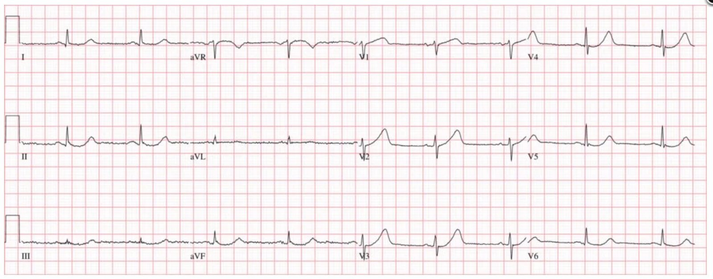
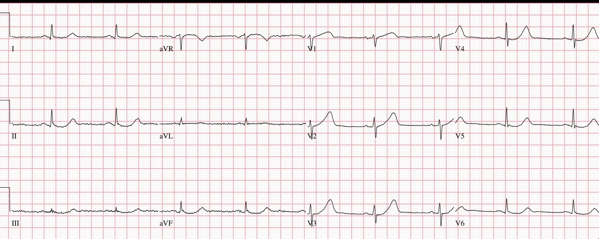
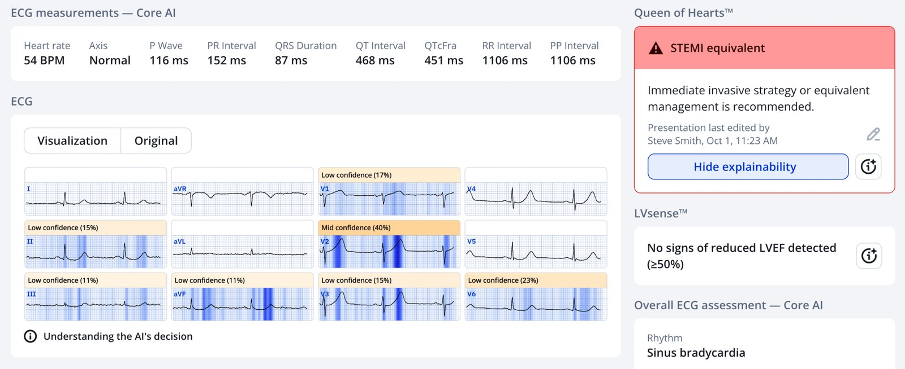
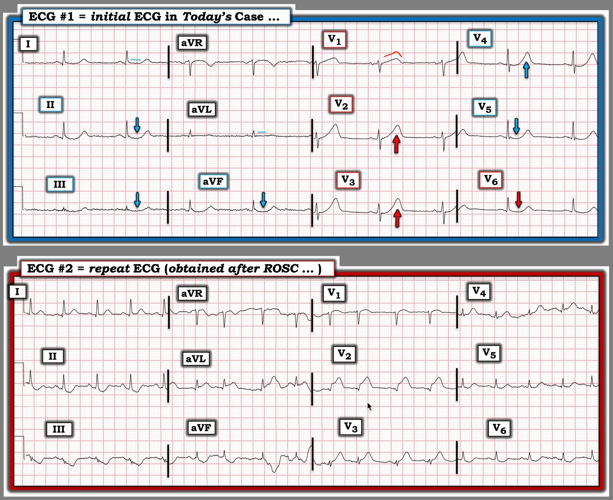

04/10/2025 — Bệnh nhân 60 tuổi đến khoa cấp cứu vì đau ngực, các dấu hiệu trên điện tâm đồ bị bỏ sót, sau đó ngừng tim do rung thất
Bản dịch tiếng Việt của bài "A 60 yo presented to the ED with chest pain, ECG findings missed, then went into V-Fib cardiac arrest" – Dr. Smith’s ECG Blog. Giữ nguyên toàn bộ 3 hình ảnh và 1 video của bản gốc.


Một người đàn ông 60 tuổi đến khoa cấp cứu (ED) vì đau ngực và điện tâm đồ này đã được ghi. Máy tính đọc điện tâm đồ này là bình thường.


Chẩn đoán là gì? (Xem bên dưới)
Các dấu hiệu này đã không được nhận ra. Sau đó bệnh nhân bị ngừng tim do rung thất (V-Fib). Hãy xem video phân tích chi tiết ca điện tâm đồ rất quan trọng này và xem điều gì đã xảy ra!
Khi thuật toán quy ước chẩn đoán một điện tâm đồ là hoàn toàn “bình thường”, thuật toán thường sai. Các thuật toán này đặc biệt hay bỏ sót những dấu hiệu đặc hiệu nhưng kín đáo của nhồi máu cơ tim do tắc (Occlusion MI, OMI). Chúng không chỉ bỏ sót bằng cách gọi là “bất thường ST-T không đặc hiệu”, mà còn bỏ sót bằng cách gọi điện tâm đồ là hoàn toàn bình thường!!
Chúng tôi đã chỉ ra rằng, trong số các ca mà Smith nhận ra là OMI nhưng máy tính cho là hoàn toàn “bình thường” (xin nhắc lại, không phải “ST-T không đặc hiệu”), và rốt cuộc thực sự là OMI, mô hình AI PMCardio Queen of Hearts không chỉ nhận ra điện tâm đồ là bất thường mà còn chẩn đoán được OMI ở 80% số ca! Toàn văn: Artificial Intelligence Detection of Occlusive Myocardial Infarction from Electrocardiograms Interpreted as “Normal” by Conventional Algorithms
Ngoài ra, chúng tôi đã chỉ ra rằng khi tắc hoàn toàn LAD, 38% (20/53) không đạt tiêu chuẩn STEMI trên điện tâm đồ đầu tiên và không ca nào từng xuất hiện ST chênh lên (STE). 17/20 ca có sóng T tối cấp trên điện tâm đồ đầu tiên; không ca nào từng tiến triển thành ST chênh lên. PMCardio Queen of Hearts chẩn đoán được cả 53 ca ngay trên điện tâm đồ đầu tiên: Failure of standard contemporary ST-elevation myocardial infarction electrocardiogram criteria to reliably identify acute occlusion of the left anterior descending coronary artery
Dĩ nhiên mô hình AI điện tâm đồ PMCardio Queen of Hearts đọc đúng:


PMcardio for Individuals nay đã có mô hình Queen of Hearts mới nhất, phần giải thích của AI (explainability, bản đồ nhiệt màu xanh lam) và % phân suất tống máu thất trái. Tải ngay cho iOS hoặc Android: https://individuals.pmcardio.com/app/promo?code=DRSMITH20. Là thành viên cộng đồng của chúng tôi, bạn có thể dùng mã DRSMITH20 để được giảm giá độc quyền 20% cho năm đầu tiên của gói đăng ký theo năm. Tuyên bố miễn trừ: PMcardio đã được chứng nhận CE để lưu hành tại Liên minh châu Âu và Vương quốc Anh. Công nghệ PMcardio chưa được Cục Quản lý Thực phẩm và Dược phẩm Hoa Kỳ (FDA) cấp phép sử dụng lâm sàng tại Hoa Kỳ.
======================================
BÌNH LUẬN CỦA TÔI, bởi KEN GRAUER, MD (4/10/2025):
Ca hôm nay của Dr. Sam Ghali đáng chú ý vì một loạt sơ suất. Ngay cả khi không biết nhiều chi tiết của ca này — những điều sau đây vẫn hiển nhiên.
- Ở một bệnh nhân đến khoa cấp cứu vì đau ngực mới khởi phát (CP – Chest Pain) với điện tâm đồ ban đầu như Dr. Ghali trình bày ở trên — có chỉ định thông tim ngay lập tức mà không cần chờ kết quả troponin, thậm chí không cần ghi lại điện tâm đồ.
- Có vẻ những người điều trị đã dựa vào kết quả đọc bằng máy tính và việc áp dụng tiêu chuẩn STEMI — qua đó bỏ qua thực tế là cả 12 chuyển đạo của điện tâm đồ ban đầu đều bất thường. Và, như thường được nhấn mạnh trên Dr. Smith’s ECG Blog — chương trình đọc điện tâm đồ bằng máy tính duy nhất có độ chính xác trong việc phát hiện OMI cấp trên một bản ghi STEMI âm tính là ứng dụng QOH (Queen Of Hearts).
- Cuối cùng — Chúng ta được biết rằng “một thời gian sau khi điện tâm đồ thứ 1 được ghi — bệnh nhân đột ngột rơi vào rung thất (VFib)”. Mặc dù khoảng thời gian từ điện tâm đồ ban đầu của ca hôm nay đến thời điểm bệnh nhân này ngừng tim không được cho biết — từ những gì được mô tả, khoảng thời gian mà bệnh nhân “lọt qua tầm radar” nhiều khả năng đã vượt xa mức tối đa 15 đến 30 phút mà người ta nên chờ trước khi ghi lại điện tâm đồ ở một bệnh nhân đến viện vì đau ngực mới xuất hiện và có điện tâm đồ đáng ngờ.
2 điện tâm đồ của ca hôm nay:
Tôi xin bổ sung cho phần trình bày xuất sắc của Dr. Ghali bằng vài nhận xét về các điện tâm đồ của ca hôm nay. Để thuận tiện so sánh các bản ghi này — tôi đã đặt chúng cạnh nhau trong Hình 1.


Hình 1: 2 điện tâm đồ trong ca hôm nay.
Cả 12 chuyển đạo trong điện tâm đồ #1 đều biểu hiện ít nhất một bất thường nào đó.
- Như Dr. Ghali đã nêu (ở bệnh nhân này, người đến viện với đau ngực mới xuất hiện) — “mắt” tôi lập tức bị chuyển đạo V1 thu hút. Bình thường bạn hầu như không bao giờ thấy đoạn ST thẳng đuỗn với mức độ “đồ sộ” không tương xứng như ở chuyển đạo này (tức là, sóng T ở V1 gần như đủ lớn để nuốt chửng phức bộ QRS nhỏ bé đứng trước nó).
- Như Dr. Ghali đã nêu — khái niệm tính tương xứng (proportionality) là MẤU CHỐT để đánh giá điện tâm đồ ban đầu này. Do đó, các sóng T tối cấp ở chuyển đạo V2 và V3 không chỉ “phình to” ở đỉnh và rộng ở đáy hơn mong đợi — mà các sóng T này còn cao hơn sóng R ở các chuyển đạo này.
- Chuyển đạo V4 lân cận phản ánh sự lan rộng của các sóng T tối cấp này (dù cuối cùng sóng R ở V4 cũng trở nên cao hơn một chút so với sóng T đi trước nó).
- Chúng ta thấy một điều khác ở các chuyển đạo ngực bên V5,V6 — ở chỗ thay vì sóng T “quá đầy đặn” (hypervoluminous) — lại có ST chênh xuống dạng vòm.
Suy nghĩ của tôi: Tôi diễn giải toàn bộ hình ảnh ST-T ở các chuyển đạo ngực của điện tâm đồ #1 là phù hợp với hình ảnh “Xoáy” trước tim (Precordial Swirl) mà chúng tôi thường nêu bật trên Dr. Smith’s ECG Blog (Xem bài đăng ngày 15 tháng Mười năm 2022 — trong đó Dr. Meyers trình bày 20 ca Xoáy hoặc giống Xoáy — và trong đó Bình luận của tôi ở cuối trang gợi ý các dấu hiệu MẤU CHỐT cần tìm ở chuyển đạo V1 và V6).
- Ý nghĩa lâm sàng của việc nhận ra “Xoáy” — là hình ảnh này gợi ý mạnh mẽ vị trí tắc ở đoạn rất gần của LAD (thường ở đoạn gần so với nhánh xuyên vách thứ 1 — dẫn đến thiếu máu cục bộ vách liên thất bên cạnh tổn thương thành trước và mỏm tim).
- MẤU CHỐT để nhận ra Xoáy là hình ảnh ST-T tối cấp và bất thường ở chuyển đạo V1, thường kèm ST chênh lên đáng ngạc nhiên ở chuyển đạo này, trông khác với hình dạng của ST-T tối cấp ở chuyển đạo V2 — và — ST chênh xuống dạng dẹt hoặc dạng lõm ở chuyển đạo V6 (và đôi khi cả ở chuyển đạo V5).
Tiếp tục với các chuyển đạo chi ở điện tâm đồ #1:
- Như Dr. Ghali đã nêu — các thay đổi soi gương được thấy ở mỗi chuyển đạo thành dưới. Hình dạng của các thay đổi này tương tự ST chênh xuống dạng lõm với phần cuối dương mà chúng ta thấy ở V5,V6.
- Chuyển đạo I và aVL biểu hiện bất thường kín đáo là đoạn ST dẹt.
- Hoàn tất chuỗi bất thường ST-T ở từng chuyển đạo trong 12 chuyển đạo của điện tâm đồ #1 — là ST chênh lên dạng vòm ở chuyển đạo aVR, bản thân đây cũng là một thay đổi soi gương, biểu hiện hình ảnh đối ngược như soi gương với ST chênh xuống dạng lõm thấy ở các chuyển đạo dưới-bên (nhiều khả năng phản ánh thiếu máu cục bộ dưới nội tâm mạc lan tỏa do tắc LAD đoạn rất gần).
Cách dễ nhất để nhận ra diễn tiến của ca hôm nay là so sánh trực tiếp 2 bản ghi của ca hôm nay trong Hình 1:
- Lưu ý tần số tim tăng lên ở điện tâm đồ #2 — đi kèm không chỉ ST chênh lên rõ rệt lúc này ở các chuyển đạo aVL,V2,V3 — mà còn mất sóng r từ V1 sang V2, với sóng Q ở chuyển đạo V2 — và biên độ QRS giảm thêm ở các chuyển đạo ngực (với nhịp nhanh xoang này và điện thế thấp rõ rệt ở các chuyển đạo ngực của bản ghi sau hồi sức, phù hợp với choáng cơ tim (myocardial stunning) sau ngừng tim).
Kết luận — Bệnh nhân hôm nay đã may mắn sống sót. Người ta tự hỏi bao nhiêu cơ tim đã bị mất do chậm trễ trong việc nhận ra tình trạng tắc LAD đoạn gần cấp tính của ông, vốn không được điều trị tối ưu cho đến khi cơn ngừng tim cuối cùng cũng thu hút được sự chú ý của những người chăm sóc.
= = =